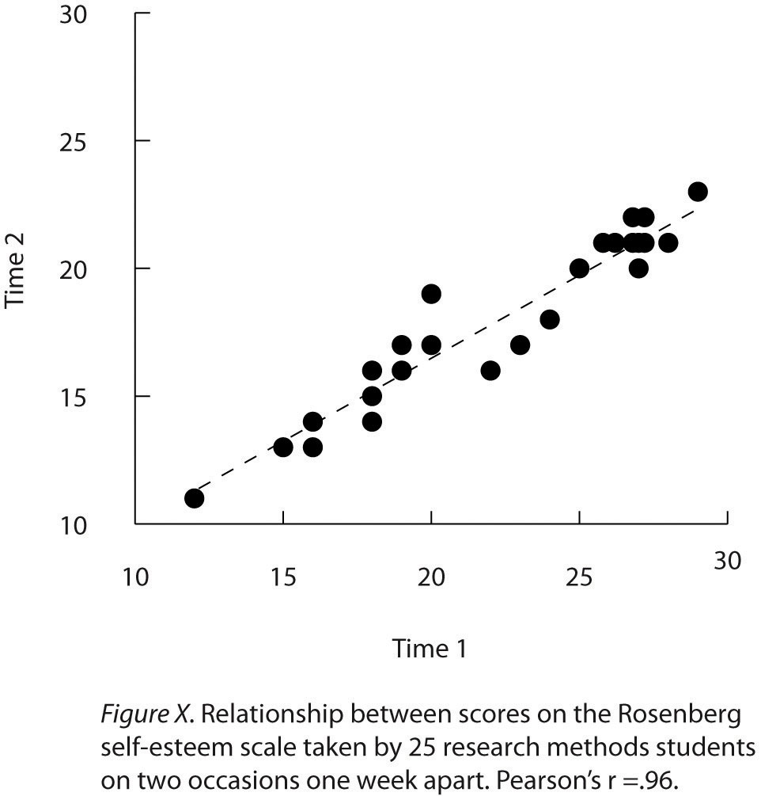
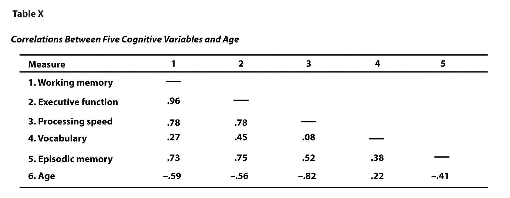

Once you have conducted your descriptive statistical analyses, you will need to present them to others. In this section, we focus on presenting descriptive statistical results in writing, in graphs, and in tables—following American Psychological Association (APA) guidelines for written research reports. These principles can be adapted easily to other presentation formats such as posters and slide show presentations.
When you have a small number of results to report, it is often most efficient to write them out. There are a few important APA style guidelines here. First, statistical results are always presented in the form of numerals rather than words and are usually rounded to two decimal places (e.g., “2.00” rather than “two” or “2”). They can be presented either in the narrative description of the results or parenthetically—much like reference citations. Here are some examples:
The mean age of the participants was 22.43 years with a standard deviation of 2.34.
Among the low self-esteem participants, those in a negative mood expressed stronger intentions to have unprotected sex (M = 4.05, SD = 2.32) than those in a positive mood (M = 2.15, SD = 2.27).
The treatment group had a mean of 23.40 (SD = 9.33), while the control group had a mean of 20.87 (SD = 8.45).
The test-retest correlation was .96.
There was a moderate negative correlation between the alphabetical position of respondents’ last names and their response time (r = −.27).
Notice that when presented in the narrative, the terms mean and standard deviation are written out, but when presented parenthetically, the symbols M and SD are used instead. Notice also that it is especially important to use parallel construction to express similar or comparable results in similar ways. The third example is much better than the following nonparallel alternative:
The treatment group had a mean of 23.40 (SD = 9.33), while 20.87 was the mean of the control group, which had a standard deviation of 8.45.
When you have a large number of results to report, you can often do it more clearly and efficiently with a graph. When you prepare graphs for an APA-style research report, there are some general guidelines that you should keep in mind. First, the graph should always add important information rather than repeat information that already appears in the text or in a table. (If a graph presents information more clearly or efficiently, then you should keep the graph and eliminate the text or table.) Second, graphs should be as simple as possible. For example, the Publication Manual discourages the use of color unless it is absolutely necessary (although color can still be an effective element in posters, slide show presentations, or textbooks.) Third, graphs should be interpretable on their own. A reader should be able to understand the basic result based only on the graph and its caption and should not have to refer to the text for an explanation.
There are also several more technical guidelines for graphs that include the following:
Layout
Axis Labels and Legends
Captions
As we have seen throughout this book, bar graphsA graph used to show differences between the mean scores of two or more groups or conditions. are generally used to present and compare the mean scores for two or more groups or conditions. The bar graph in Figure 12.12 "Sample APA-Style Bar Graph, With Error Bars Representing the Standard Errors, Based on Research by Ollendick and Colleagues" is an APA-style version of Figure 12.5 "Bar Graph Showing Mean Clinician Phobia Ratings for Children in Two Treatment Conditions". Notice that it conforms to all the guidelines listed. A new element in Figure 12.12 "Sample APA-Style Bar Graph, With Error Bars Representing the Standard Errors, Based on Research by Ollendick and Colleagues" is the smaller vertical bars that extend both upward and downward from the top of each main bar. These are error barsIn bar graphs and line graphs, vertical lines that show the amount of variability around the mean in each group or condition. They typically extend upward and downward one standard error from the top of each bar or point., and they represent the variability in each group or condition. Although they sometimes extend one standard deviation in each direction, they are more likely to extend one standard error in each direction (as in Figure 12.12 "Sample APA-Style Bar Graph, With Error Bars Representing the Standard Errors, Based on Research by Ollendick and Colleagues"). The standard errorThe standard deviation divided by the square root of the sample size. Often used for error bars in graphs. is the standard deviation of the group divided by the square root of the sample size of the group. The standard error is used because, in general, a difference between group means that is greater than two standard errors is statistically significant. Thus one can “see” whether a difference is statistically significant based on a bar graph with error bars.
Figure 12.12 Sample APA-Style Bar Graph, With Error Bars Representing the Standard Errors, Based on Research by Ollendick and Colleagues

Line graphsA graph used to show the relationship between two quantitative variables. For each level of the X variable, there is a point representing the mean of the Y variable. The points are connected by lines. are used to present correlations between quantitative variables when the independent variable has, or is organized into, a relatively small number of distinct levels. Each point in a line graph represents the mean score on the dependent variable for participants at one level of the independent variable. Figure 12.13 "Sample APA-Style Line Graph Based on Research by Carlson and Conard" is an APA-style version of the results of Carlson and Conard. Notice that it includes error bars representing the standard error and conforms to all the stated guidelines.
Figure 12.13 Sample APA-Style Line Graph Based on Research by Carlson and Conard

In most cases, the information in a line graph could just as easily be presented in a bar graph. In Figure 12.13 "Sample APA-Style Line Graph Based on Research by Carlson and Conard", for example, one could replace each point with a bar that reaches up to the same level and leave the error bars right where they are. This emphasizes the fundamental similarity of the two types of statistical relationship. Both are differences in the average score on one variable across levels of another. The convention followed by most researchers, however, is to use a bar graph when the variable plotted on the x-axis is categorical and a line graph when it is quantitative.
ScatterplotsA graph used to show the correlation between two quantitative variables. For each individual, there is a point representing that individual’s score on both the X and Y variables. are used to present relationships between quantitative variables when the variable on the x-axis (typically the independent variable) has a large number of levels. Each point in a scatterplot represents an individual rather than the mean for a group of individuals, and there are no lines connecting the points. The graph in Figure 12.14 "Sample APA-Style Scatterplot" is an APA-style version of Figure 12.8 "Statistical Relationship Between Several College Students’ Scores on the Rosenberg Self-Esteem Scale Given on Two Occasions a Week Apart", which illustrates a few additional points. First, when the variables on the x-axis and y-axis are conceptually similar and measured on the same scale—as here, where they are measures of the same variable on two different occasions—this can be emphasized by making the axes the same length. Second, when two or more individuals fall at exactly the same point on the graph, one way this can be indicated is by offsetting the points slightly along the x-axis. Other ways are by displaying the number of individuals in parentheses next to the point or by making the point larger or darker in proportion to the number of individuals. Finally, the straight line that best fits the points in the scatterplot, which is called the regression line, can also be included.
Figure 12.14 Sample APA-Style Scatterplot
Like graphs, tables can be used to present large amounts of information clearly and efficiently. The same general principles apply to tables as apply to graphs. They should add important information to the presentation of your results, be as simple as possible, and be interpretable on their own. Again, we focus here on tables for an APA-style manuscript.
The most common use of tables is to present several means and standard deviations—usually for complex research designs with multiple independent and dependent variables. Figure 12.15 "Sample APA-Style Table Presenting Means and Standard Deviations", for example, shows the results of a hypothetical study similar to the one by MacDonald and Martineau (2002)MacDonald, T. K., & Martineau, A. M. (2002). Self-esteem, mood, and intentions to use condoms: When does low self-esteem lead to risky health behaviors? Journal of Experimental Social Psychology, 38, 299–306. discussed in Chapter 5 "Psychological Measurement". (The means in Figure 12.15 "Sample APA-Style Table Presenting Means and Standard Deviations" are the means reported by MacDonald and Martineau, but the standard errors are not). Recall that these researchers categorized participants as having low or high self-esteem, put them into a negative or positive mood, and measured their intentions to have unprotected sex. Although not mentioned in Chapter 5 "Psychological Measurement", they also measured participants’ attitudes toward unprotected sex. Notice that the table includes horizontal lines spanning the entire table at the top and bottom, and just beneath the column headings. Furthermore, every column has a heading—including the leftmost column—and there are additional headings that span two or more columns that help to organize the information and present it more efficiently. Finally, notice that APA-style tables are numbered consecutively starting at 1 (Table 1, Table 2, and so on) and given a brief but clear and descriptive title.
Figure 12.15 Sample APA-Style Table Presenting Means and Standard Deviations

Another common use of tables is to present correlations—usually measured by Pearson’s r—among several variables. This is called a correlation matrixA table that shows the correlations among several variables.. Figure 12.16 "Sample APA-Style Table (Correlation Matrix) Based on Research by McCabe and Colleagues" is a correlation matrix based on a study by David McCabe and colleagues (McCabe, Roediger, McDaniel, Balota, & Hambrick, 2010).McCabe, D. P., Roediger, H. L., McDaniel, M. A., Balota, D. A., & Hambrick, D. Z. (2010). The relationship between working memory capacity and executive functioning. Neuropsychology, 243, 222–243. They were interested in the relationships between working memory and several other variables. We can see from the table that the correlation between working memory and executive function, for example, was an extremely strong .96, that the correlation between working memory and vocabulary was a medium .27, and that all the measures except vocabulary tend to decline with age. Notice here that only half the table is filled in because the other half would have identical values. For example, the Pearson’s r value in the upper right corner (working memory and age) would be the same as the one in the lower left corner (age and working memory). The correlation of a variable with itself is always 1.00, so these values are replaced by dashes to make the table easier to read.
Figure 12.16 Sample APA-Style Table (Correlation Matrix) Based on Research by McCabe and Colleagues
As with graphs, precise statistical results that appear in a table do not need to be repeated in the text. Instead, the writer can note major trends and alert the reader to details (e.g., specific correlations) that are of particular interest.